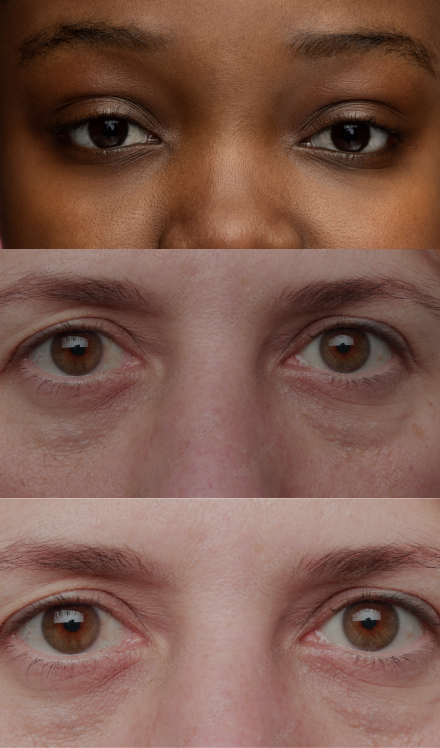

CASE 1 OF 4
YOUR PARTNER ALWAYS WANTS TO KNOW WHERE YOU ARE, AND GETS UPSET WHEN YOU MAKE PLANS WITHOUT HIM/HER.
HOW ARE YOU FEELING?

A data experience on gender-based violence in Europe.
You probably know gender-based violence exists.
But knowing it exists and
recognizing it when it's in front
of you are two different things.
This is data from 114,000 women in Europe.* Real answers to real questions.
Some of what you'll see might feel familiar. Take your time with it.
* FRA, EIGE, Eurostat (2024), EU gender-based violence survey - Key results. Experiences of women in the EU-27, Publications Office of the European Union, Luxembourg.
YOUR PARTNER ALWAYS WANTS TO KNOW WHERE YOU ARE, AND GETS UPSET WHEN YOU MAKE PLANS WITHOUT HIM/HER.
HOW ARE YOU FEELING?